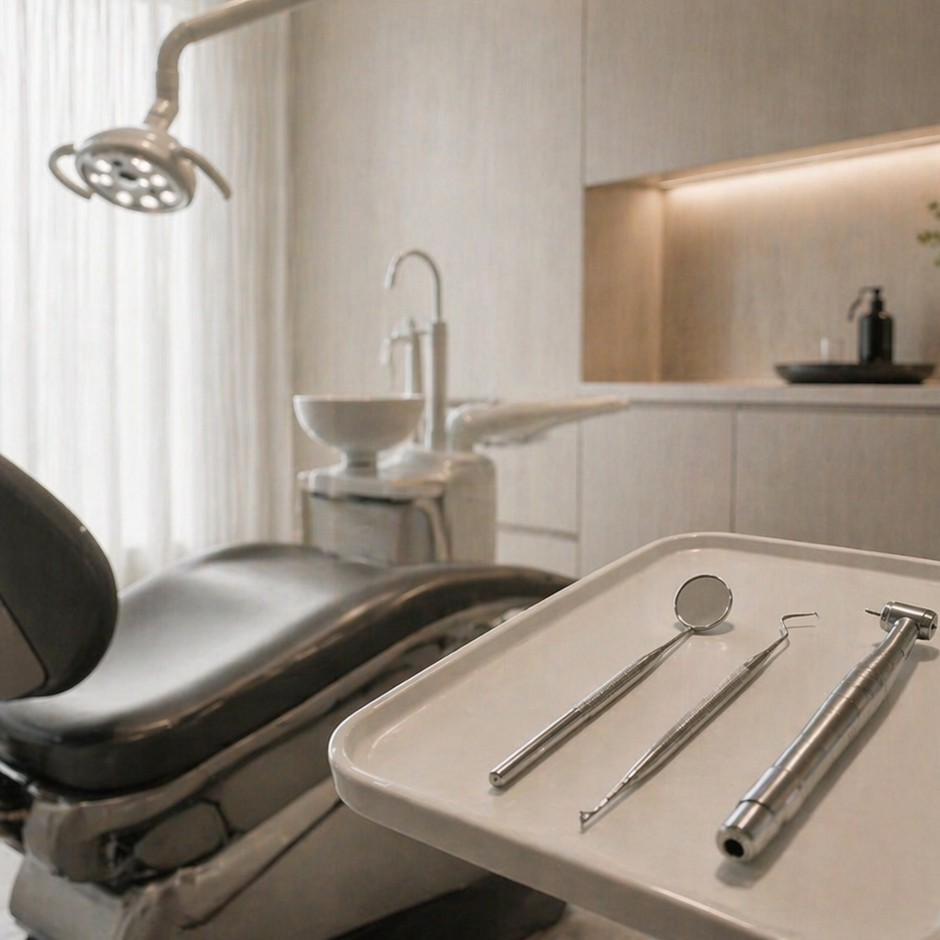

Notre équipe
Des praticiens dévoués à votre sourire

Dr. Sophie Marchal
Dentiste principale
Dr. Thomas Hertz
Orthodontiste
« J'ai toujours cru qu'un cabinet dentaire pouvait ressembler à une maison de couture : la rigueur du geste, la discrétion du lieu, et un souci du détail qui ne se voit pas — mais qui se ressent. »
Après plusieurs années dans de grands centres dentaires, le Dr. Sophie Marchal imagine un cabinet où chaque rendez-vous ressemble davantage à une parenthèse qu'à une contrainte — sans jamais transiger sur la rigueur clinique.
Orélia ouvre ses portes rue Saint-Florentin, pensé comme un lieu à part : lumière tamisée, matériaux nobles, équipements de dernière génération.
Arrivée du Dr. Lina Weiss et développement du pôle implantologie, avec l'intégration de l'imagerie 3D pour une planification millimétrée.
Orélia reste volontairement un cabinet à taille humaine, pour préserver l'attention individuelle qui a fondé sa réputation.

Nous croyons qu'un soin dentaire d'exception commence par l'écoute. Chaque traitement est pensé sur-mesure, avec des technologies de pointe et un accompagnement personnalisé, dans un cadre pensé pour votre sérénité.
Patients suivis
Années d'expertise
Suivi personnalisé
Des praticiens expérimentés qui délivrent des soins de confiance.
Un accompagnement à chaque étape de votre traitement.
Des soins personnalisés, pensés pour vous.
Un cabinet réactif, y compris en urgence.
Découvrez notre équipe ou prenez directement rendez-vous.